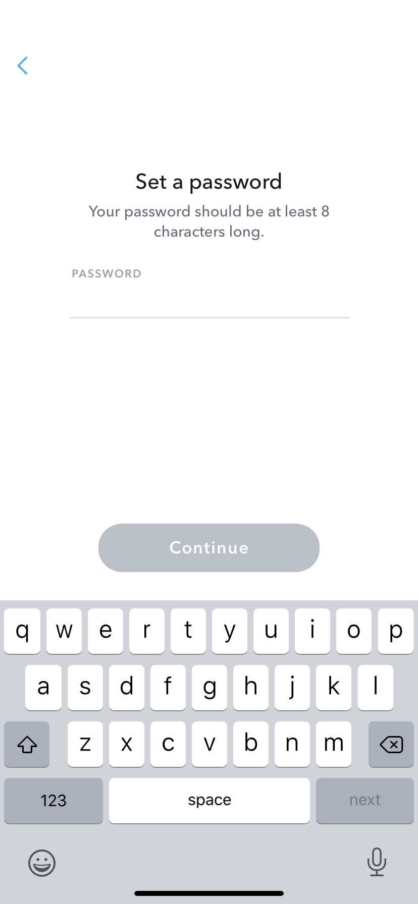
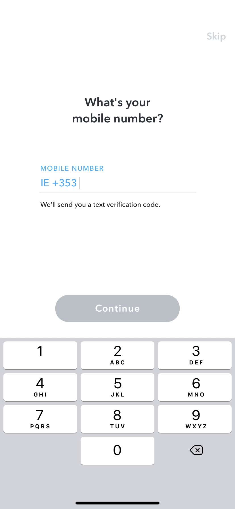
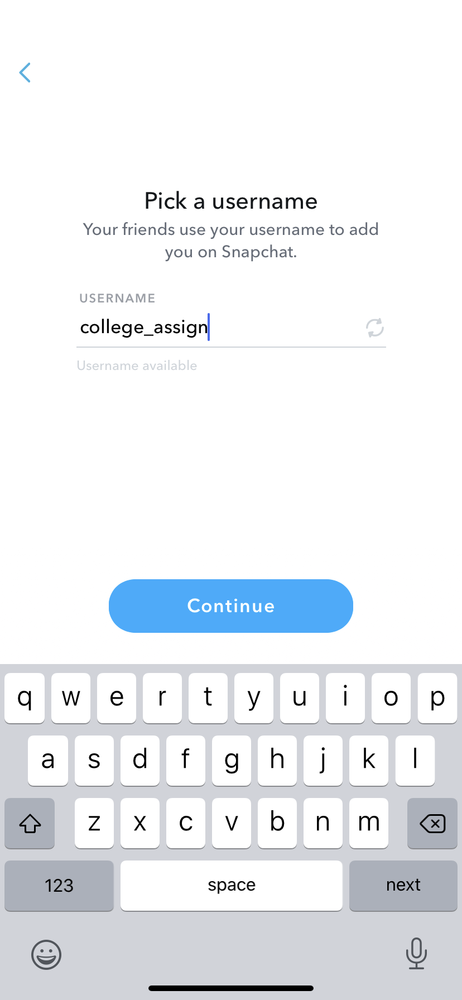

About
Snapchat is an app that is available on the app store (apple) and the
google play store (android). It is a simple app. Once you download it and
make an account it is amazing what you can do! You can send and
receive videos and photos from your ‘friends’ once you have added them.
You can also post to your ‘story’ which is something that all your friends
can see. It is kind of like posting a status on Facebook or tweeting on
Twitter. You can block certain people from seeing it. You can also make a
‘Private’ story which is one where you are in control of who you add to see
the story. There are also public stories on snapchat and shows. From
MTV to Beauty Insider, you can watch different mini shows or read
articles. You can subscribe to certain mini shows or even news stories, so
you never miss one! You can also chat to people without sending a video
or picture, just like texting. There are also group-chats on the app in which you can have all your friends in on spot to text or snapchat.
Registration
1. In order to register for Snapchat, you need to download the app from the app/play store.
2. Once downloaded you it gives you the option to sign in or sign up, as you need to create an
account to use the app.
3. When you click sign up, it then asks you for your name.
4. It then asks for your birthday. The app is for anyone aged 13+ so they ask for your age in order
to see if you’re over 13.
5. Once you’ve put in your age it then asks you to select your username it generates some for you
or you can pick your own.
6. Next is the password selection. It has to be more than eight characters long.
7. You then need to add your email and then it asks for your mobile number, this isn’t a required
step, but it is better to add your phone number.
8. It then asks if you want to find friends by syncing your contacts, you can skip this step and do it
later if you want.
9. Then that’s it, you are signed up for Snapchat!





Use for teaching
There are many ways that snapchat can be used for educational purposes. Here are
some examples: Snapchat has this tool where stories are taken down after 24 hours which would be
useful for students who have any questions or need help with something. It is up
long enough for the teacher to read but also it is automatically taken down after the
24 hour period giving anonymity and privacy to the student.